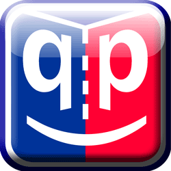

To check what's new in QP/C++, please see QP/C++ Revision History.
QP/C++™ (Quantum Platform in C++) is a lightweight Real-Time Embedded Framework (RTEF) for building modern, responsive and modular real-time embedded applications as systems of asynchronous event-driven active objects (actors). QP/C++™ is a member of a larger family of real-time embedded frameworks (RTEFs) consisting of QP/C++ and QP/C frameworks, which are all strictly quality controlled, thoroughly documented, and available under dual licensing model.
The behavior of active objects is specified in QP/C++ by means of hierarchical state machines (UML statecharts). The framework supports manual coding of UML state machines in C++ as well as automatic code generation by means of the free QM™ model-based design tool.

The main goals of the QP/C++™ framework are:
The QP/C++™ Real-Time Embedded Framework (RTEF) is a unique offering on the embedded software market. It provides a modern, reusable architecture of embedded applications, which combines object-orientation and hierarchical state machines with the particular model of concurrency, known as active objects (actors). This architecture is generally safer, more responsive and easier to understand than "free threading" with a traditional Real-Time Operating System (RTOS). It also provides sufficiently high level of abstraction and the right abstractions to effectively apply modeling and code generation to deeply embedded systems.
QP/C++™ is fundamentally an object-oriented framework, which means that the framework itself and your applications derived from the framework are fundamentally composed of classes and only classes can have state machines associated with them.
The most unique characteristic of the QP/C++™ framework is its very small footprint, especially in RAM. In this respect, QP/C++™ requires less resources than even the smallest conventional Real-Time Operating System (RTOS) kernel. At the same time, QP/C++ gives you a much higher level of abstraction than a conventional RTOS. With QP, you work at the level of active objects, state machines and events, as opposed to "naked" threads of an RTOS.
The behavior of active objects is specified in QP/C++ by means of hierarchical state machines (UML statecharts). The framework supports manual coding of UML state machines in C++ (or C in case of QP/C) as well as fully automatic code generation by means of the free graphical QM™ model-based design (MBD) tool.
The QP™/C++ framework can run on bare-metal single-chip microcontrollers, completely replacing a traditional RTOS. The framework contains a selection of built-in real-time kernels, such as the cooperative QV kernel, the preemptive non-blocking QK kernel, and the preemptive, dual-mode, blocking QXK kernel. The QXK kernel provides all the features you might expect from a traditional RTOS kernel and has been specifically designed for mixing event-driven active objects with traditional blocking code, such as commercial middleware (TCP/IP stacks, UDP stacks, embedded file systems, etc.) or legacy software. Native QP ports and ready-to-use examples are provided for major CPU families.
QP/C++ can also work with many traditional RTOSes and desktop OSes (such as Windows and Linux).
With over 15 years of continuous development and 60,000 downloads a year, the QP™ RTEF family is the most mature and popular such solution on the embedded software market. The QP™ frameworks are used in millions of products worldwide in medical devices, consumer electronics, wired and wireless telecommunications, industrial automation, transportation, aerospace, robotics, and many more.
The book, Practical UML Statecharts in C/C++, 2nd Edition provides a detailed design study of the QP frameworks and explains all the related concepts.
QP/C++ is licensed under the increasingly popular dual licensing model, in which both the open source software distribution mechanism and traditional closed source software distribution models are combined.
If you are developing and distributing open source applications under the GNU General Public License (GPL), as published by the Free Software Foundation, then you are free to use the Quantum Leaps software under the GPL version 3 of the License, or (at your option) any later version. Please note that GPL requires that all modifications to the original code as well as your application code (Derivative Works as defined in the Copyright Law) must also be released under the terms of the GPL open source license.
If you are developing and distributing traditional closed source applications, you can purchase one of Quantum Leaps commercial licenses, which are specifically designed for users interested in retaining the proprietary status of their code. All Quantum Leaps commercial licenses expressly supersede the GPL open source license. This means that when you license Quantum Leaps software under a commercial license, you specifically do not use the software under the open source license and therefore you are not subject to any of its terms.
Please post any technical questions to the Free Support Forum hosted on SourceForge.net. Posts to this forum benefit the whole community and are typically answered the same day.
Direct Commercial Support is available to the commercial licensees. Every commercial license includes one year of Technical Support for the licensed software. The support term can be extended annually.
Training and consulting services are also available from Quantum Leaps. Please refer to the Contact web-page for more information.
Next: Getting Started